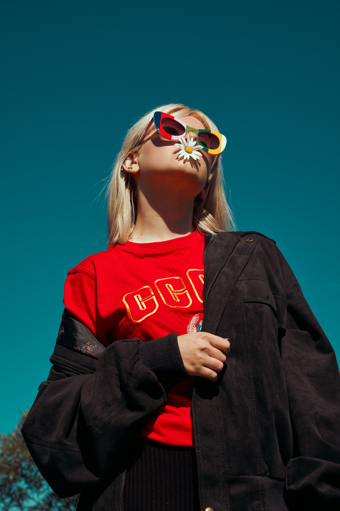

ol는 리스트 앞에 숫자 자동으로 넣어줌/ li는 ol 속 리스트
- ul안에 숫자 없는 리스트 li는 ul 속 리스트 마리메꼬
html h1태그는 제목크기
br 은 줄바꿈/ p는문장을 단락으로 만드는 것 패션쇼로 출사표를 던진 여성 디자이너들
meta charset="utf8"는 한글과 특수문자가 깨지지 않도록 하는것 DOCTYPE은 웹 브라우저에서 처리할 문서가 HTML이며 어떠한 버전으로 사용하였으니 해당 방식대로 해석하라는 의미
이미지는 img 소스 src= "폴더 속 이미지 이름" 사이즈 width = "사이즈"

a는 정보를 정박한다 즉 링크 거는것 a href 하이퍼레퍼런스 = "링크"
과감한 색감과 패턴이 두드러지는 마리메꼬는 이딸라, 아르텍 등과 나란히 핀란드를 북유럽 디자인 강국으로 알리는 데 중요한 역할을 한 브랜드다. 창업가 아르미 라티아Armi Ratia는 마리메꼬를 글로벌 브랜드로 키운 핀란드의 대표적 여성 CEO이다. 헬싱키에서 텍스타일 디자인을 공부한 그는 1949년 남편 빌조 라티아Viljo Ratia와 프린텍스Printex라는 텍스타일 염색 회사를 인수한 뒤 젊고 도전적인 아티스트를 불러 모아 새로운 스타일의 텍스타일 패턴을 디자인할 것을 주문했다. 이때 발탁된 영 디자이너 중 한 명이 훗날 마리메꼬의 아이코닉한 양귀비 패턴 ‘우니꼬Unikko’를 창조한 마이야 이솔라Maija Isola다.
개발한 패턴 디자인을 빠르게 알리기 위해 일상복에 접목시키는 작업이 필요하다고 생각한 마리메꼬는 패션 디자이너 리타 임모넨Riitta Immonen을 영입해 패턴을 프린트한 레디투웨어 컬렉션을 제작했다.